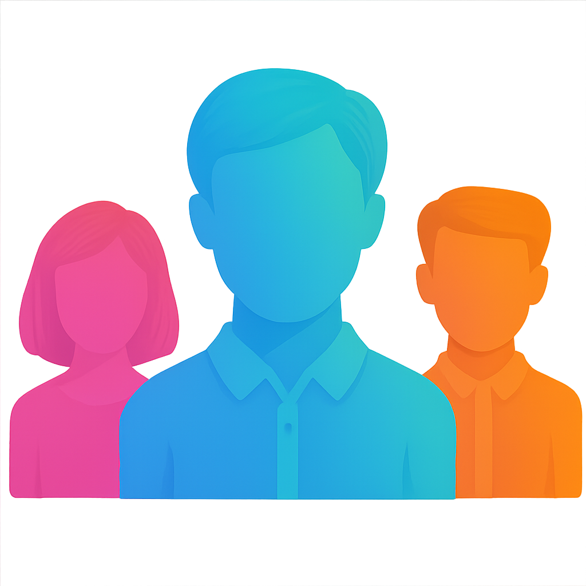

500+ Kayıtlı Öğrenci

Biz Kimiz?
Koçluk Al →
Yüzlerce Öğrenci YKS'ye Bizimle Hazırlanıyor
Yüzlerce öğrenci YKS'ye bizimle hazırlanıyor! Deneyimli koçlarımız ve kişiye özel programlarımızla başarıya ulaşmanız için yanınızdayız. Potansiyelinizi birlikte keşfedelim.
Tecrübeli Koçlar
Kişiye Özel Çalışma Programları
Deneme ve Net Analizleri
Günlük Takip